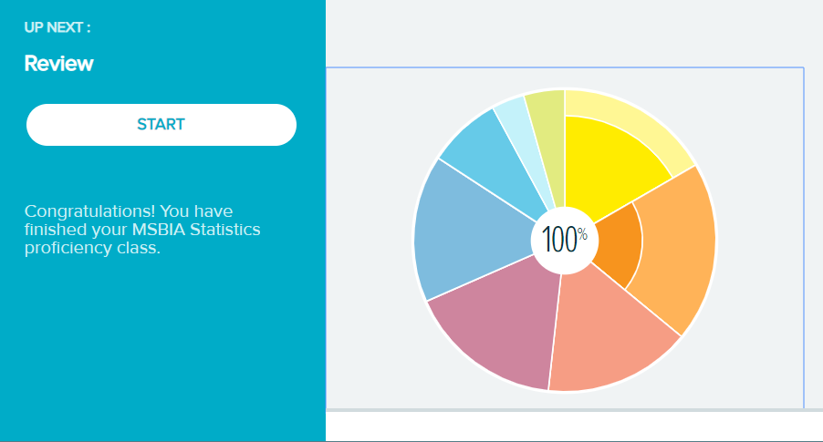
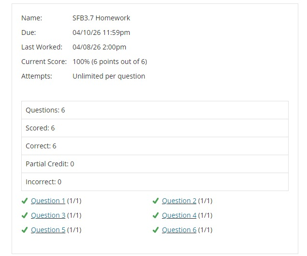
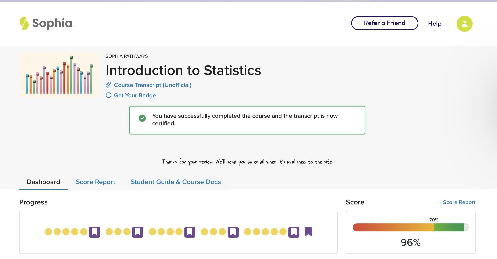

Online learning platforms were designed to make education more accessible. In reality, many students find themselves spending hours trying to complete assignments, quizzes, discussion posts, and exams on platforms such as ALEKS, Sophia Learning, MyMathLab, MyStatLab, Connect, and Cengage.
The challenge is not always understanding the material. Many students are balancing work, family responsibilities, military service, internships, or multiple classes at the same time. Deadlines pile up quickly, and before long, a few missed assignments can significantly impact a final grade.
Our team of experienced academic tutors can assist you with homework assignments, quizzes, practice tests, and full online courses. Let us help you get back on track.
Get a free quote today!
Common Challenges Students Face
Completing assignments on modern learning systems comes with unique pain points. The most common challenges include:
- Weekly homework deadlines: Keeping up with multiple assignments across different platforms every single week.
- Difficult ALEKS knowledge checks: Comprehensive assessments that can dynamically add dozens of topics back to your learning pie if you make mistakes.
- Time-consuming Sophia Learning milestones: Multi-question quizzes and written projects (touchstones) that require high accuracy to pass.
- MyMathLab assignments with multiple attempts: Clicking "Similar Exercise" repeatedly until you figure out the exact formatting the system expects.
- Cumulative courses: Statistics and mathematics courses where missing one concept early on makes everything else much harder to understand.
- Exam preparation with limited study time: Struggling to study for high-stakes proctored or unproctored midterms and finals while working full-time.
If any of these sound familiar, you are not alone. Thousands of students face the exact same issues every semester.
Platforms We Commonly Help With
We provide comprehensive tutoring and academic assistance for a wide variety of platforms and courses. Below are the key platforms where our students require support most often:
1. ALEKS (Assessment and LEarning in Knowledge Spaces)
ALEKS is commonly used for math, statistics, chemistry, and business courses. Because ALEKS is adaptive, it adjusts its difficulty based on your answers. If you struggle with a concept, it will force you to repeat practice problems. The infamous "Knowledge Checks" can feel like a step backward if you perform poorly.

2. MyMathLab & MyStatLab (Pearson)
Pearson's math and statistics platforms are notorious for their strict formatting rules. A single misplaced comma or rounding to the wrong decimal place can result in a completely incorrect answer. We help you work through these complex homework sets, quizzes, and exams step-by-step.

3. Sophia Learning
Sophia Learning provides self-paced courses for college credits, widely accepted by universities like WGU, SNHU, and Capella. While self-paced courses offer flexibility, milestones and touchstones still require a lot of reading, research, and testing to pass successfully.

Other Supported Platforms and Subjects
Our expert support goes beyond math to cover:
- McGraw-Hill Connect & Cengage MindTap: Business, marketing, accounting, and physics homework.
- Mathematics Courses: College Algebra, Precalculus, Trigonometry, Calculus I/II/III, and Linear Algebra.
- Statistics & Data Analysis: Business Statistics, Biostatistics, SPSS, R, Python, and Excel-based analyses.
- Business & Social Sciences: Economics (Micro & Macro), Accounting, Finance, and Psychology.
Why Students Reach Out
Most students are not looking for shortcuts. They simply need support when coursework becomes overwhelming. They are often managing:
- ✓ Full-time employment: Working 40+ hours a week leaves very little energy for math homework at night.
- ✓ Family responsibilities: Caring for children or aging parents leaves limited quiet time to study.
- ✓ Military service: Active-duty deployments make consistent internet access or regular study schedules difficult.
- ✓ Internships or clinicals: Practical work placements take up long daytime hours.
Whether you are struggling with statistics, mathematics, economics, or an online learning platform, getting help early can prevent unnecessary stress and improve your academic performance.
Get the Support You Need
If you need help with ALEKS assignments, Sophia Learning courses, MyMathLab homework, online exams, statistics projects, or other coursework, professional academic support can help you stay on track and meet your deadlines.
Don't wait until the last minute. Reach out today and get the assistance you need to succeed.
Request Academic Support